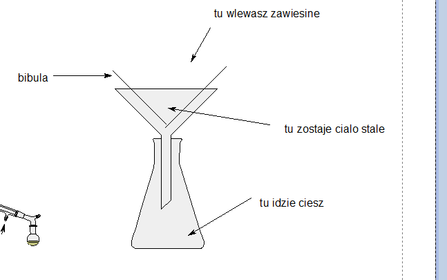
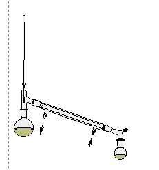
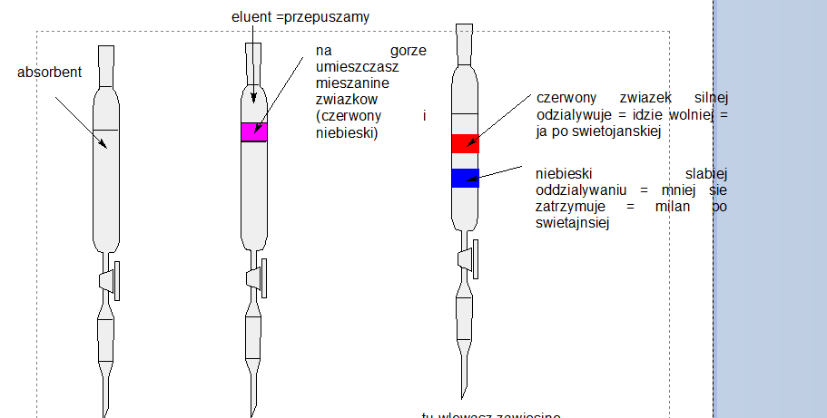

Często w chemii chcemy wydzielić jedną z substancji znajdujących się w mieszaninie. Jest to zadanie trudne, w którym musimy znać i wykorzystać właściwości rozdzielanych substancji.
Klasycznymi metodami rozdziału są:
- odparowywanie – w metodzie tej stawiamy mieszaninę w ciepłym miejscu z przewiewem (np. kaloryfer). Substancja lotna na skutek parowania przechodzi do fazy gazowej, a więc usuwamy ciecz z dowolnego rodzaju mieszaniny (roztworu włąściwego/ koloidu/ zawiesiny). Warunkiem koniecznym jest, aby jedna substancja – odparowywana była ciekła i lotna, a druga o dowolnej fazie skupienia ale nielotna – nie może uciec podczas odparowywania pierwszej. Oczywiście traci substancję odparowywaną – nie jesteśmy jej w stanie wyłapać z atmosfery
Warunki : substancja odparowywana lotna, substancja wydzielana nie, tracimy substancję odparowywana
- sedymentacja / dekantacja (inaczej zlewanie znad osadu)– mieszaninę nierozpuszczalnego ciała stałego i cieczy odstawiamy na pewien okres czasu, wówczas ciało stałe opada na dno. Po całkowitym opadnięciu ciecz ostrożnie zlewamy znad , a ciało stałe zostaje na dnie. Dla lepszego rozdziału możemy dodać dodatkową porcję cieczy i proces powtórzyć. Otrzymujemy rozdzielone oba, ale ciało stałe jest (mokre) od cieczy. Jeżeli ciecz jest lotna to możemy jej resztki usunąć przez odparowywanie. Przykładem jest rozdział piasku od wody, tak jak bawią się dzieci na plaży.
Warunki : ciało stałe powinno się niecałkowicie, a najlepiej w ogóle, rozpuszczać w cieczy. ciało stałe musi osiadać na dnie musi oraz dobrze jest, jeżeli jest grubokrystaliczne, czyli tworzy duże kryształy, co ułatwia zlewanie cieczy. Metodę możemy stosować tylko do zawiesin.
- sączenie – metoda jest analogiczna do zlewania tylko całą mieszaninę przelewamy przez bibułkę na lejku. Roztwór / ciecz przelewa się przez bibułkę, natomiast ciało stałe zostaje na bibułce. Metoda jest wolniejsza niż zlewanie, ale umożliwia rozdział cieczy od ciała stałego nawet momencie, w którym ciało stałe jest względnie drobnokrystaliczne i nie opadło na dno. Przykładem jest rozdział fusów od kawy w ekspresie do kawy po zaparzeniu.

To taka lepsza sedymentacja, cialo stale nie musi opaść na dno, ważne żeby się nie rozpuszczało.
Warunki : ciało stałe nie może się rozpuszczać całkowicie w cieczy.
Zarówno sedymentacje jak i sączenie można połączyć z wirowaniem. Wirowanie umożliwia szybsze opadnięcie ciała stałego na dno na skutek sił odśrodkowych, co znacząco przyśpiesza czas zarówno sedymentacji jak i sączenia. Przykładem jest działanie wirowania pralki. Wirowanie rozdziela ciało stałe (ubrania) od cieczy (woda)– ale czy wirowanie jest konieczne w pralce? Niby nie, bo w sumie zostawiając dostatecznie długo ubrania woda też opadła by na dno pralki, ale proces wirowania znacząco przyśpiesza.
Destylacja – rozdział składników roztworu na zasadzie różnych temperatur wrzenia. Destylację przeprowadza się w aparaturze do destylacji – aparatura ta wygląda następująco:

Na początku umieszczamy mieszaninę mieszających się cieczy w lewej kolbie, powoli ją ogrzewając. Bardziej lotna ciecz zaczyna wrzeć jako pierwsza, jej pary trafią najpierw na termometr, który wskazuje ich temperaturę – jest to temperatura wrzenia danej cieczy. Kolejno trafiają do chłodnicy (ta długa rura), która jak sama nazwa wskazuje – chłodzi je powodując ich wykraplanie. Ochłodzona ciecz spływa do odbieralnika – kolbki po prawej stronie. Dalsze ogrzewanie powoduje odparowanie całej cieczy bardziej lotnej (o mniejszej temperaturze wrzenia), a kolejno następuje nagrzanie się zbiornika z cieczą do temperatury wrzenia drugiej, mniej lotnej cieczy. Ciecz ta wtedy zaczyna wrzeć, jej pary docierają do termometru, który wskazuje ich temperaturę – temperaturę wrzenia drugiej cieczy. Oczywiście temperatury muszą być różne, a przez obserwację temperatury wskazywanej przez termometr możemy dojść, którą ciecz jest teraz zbierana – oczywiście dość gwałtowana zmiana temperatury wskazuje, że zaczyna wrzeć inna ciecz – musimy wtedy zmienić odbieralnik, aby uniknąć pomieszania się w nich obu cieczy
Warunki: tylko ciecze, substancje muszą się mieszać oraz muszą mieć różna temperatury wrzenia. Oczywiście temperatury wrzenia muszą być sensowne – tzn. takie, aby związki się nie rozłożyły podczas ogrzewania.
Krystalizacja - rozdział na zasadzie różnych rozpuszczalności substacji w danym rozpuszczalniku. Ciała stałe w większości rozpuszczają się lepiej w wyższej temperaturze. Rozpuszczamy ciało stało z niewielką ilością zanieczyszczeń w wyższej temperaturze, tak, aby uzyskać roztwór nasycony albo blisko nasycony. Po rozpuszczeniu na ciepło otrzymany roztwór chłodzimy – następuje wówczas zmniejszenie rozpuszczalności wszystkich związków, związek główny powinien się zacząć wytrącać, natomiast zanieczyszczenia zostać rozpuszczone, z uwagi na ich niewielką ilość. Po wytrąceniu się osadu czystego już związku głównego mogę go zdekantować lub odsączyć. Jest on wtedy wydzielony jako czysty związek.
Warunki : związek to ciało stałe, związek i zanieczyszczenia częściowo rozpuszczalne w rozpuszczalniku większa rozpuszczalność na ciepło, gorsza na zimno. Związek względnie łatwo krystalizujący.
Ekstrakcja – metoda używana do rozdzialu dwóch niemieszających się cieczy lub roztworów dwóch niemieszających cieczy. Ekstrakcje przeprowadzamy tzw. rozdzielaczem, czyli gruszką szklaną z korkiem i kranikiem umożliwiającym spuszczanie cieczy
Proces ekstrakcji polega na umieszczeniu mieszaniny cieczy w rozdzielaczu, wytrząśnięcie ich, poczekanie na ich rozdzielenie i spuszczenie przy użyciu kranika do odbieralnika. Oczywiście w momencie, w którym zmieniają się spływające ciecze zmieniam również odbieralnik.
Ekstrakcja umożliwia również rozdział ciał stałych pod warunkiem ich rożnej rozpuszczalność w niemieszających sie cieczach Przykładem jest rozdział substancji polarnej \(Na_{2}SO_{4}\) i jodu. Jod jako substancja niepolarna rozpuszcza się w benzynie, z kolei \(Na_{2}SO_{4}\) jako substancja polarna rozpuszcza się lepiej w wodzie. Te dwie ciecze – woda i benzyna nie mieszają się, więc możemy je wykorzystać do rozdziału tych substancji. Mieszaninę tych rozpuszczalników umieszczamy w rozdzielaczu, następnie wrzucamy tam rozdzielaną mieszaninę ciał stałych. \(Na_{2}SO_{4}\) jako substancja polarna rozpuszcza się w wodzie, a \(I_{2}\) w benzynie. Następnie czekamy na rozdzielenie się roztworów i zlewamy najpierw warstwę wodną – zawiera ona rozpuszczony \(Na_{2}SO_{4}\) , a następnie fazę benzyny – która zawiera ropuszczony \(I_{2}\) . Mamy rozdzielone od siebie \(Na_{2}SO_{4}\) i \(I_{2}\) , są one w roztworach – ale możemy względnie łatwo usunąć użyte rozpuszczalniki przez ich odparowanie.
Jak przeprowadzasz ekstrakcje to ekstrahujesz.
Stoją dwie blondynki w labie , jedna drugiej sie pyta co tam? Aa ekstraCHUJE. To podziel się
Warunki : rozdzielane substancje muszą być cieczami i się nie mieszać lub muszą być rozpuszczalne w dwóch różnych niemieszających się cieczach.
Chromatografia – są to metody oparte na oddziaływaniu rozdzielanych substancji z podłożem, na którym rozdzielamy. Przykładem chromatografii jest chromatografia kolumnowa. W długiej szklanej rurze zwanej kolumn chromatograficzną umieszczamy wypełnienie – tzw absorbent. Absorbent jest silnie rozdrobnionym związkiem oddziaływującym z rozdzielanymi substancjami, tworzy on z nimi słabe wiązania. Następnie na szczycie kolumny umieszczamy mieszaninę rozdzielanych związków, najlepiej w fazie ciekłej. Po zaabsorbowaniu przez warstwę żelu tej mieszaniny przepuszczam przez całą kolumnę tzw eluent – jest to rozpuszczalnik, który wymywa związki z kolumny. Im związek silniej oddziaływuje z wypełnieniem tym lepiej się trzyma on tego wypełnienia, a więc wolniej się porusza z ruchem rozpuszczalnika. Oczywiście związki zwykle inaczej oddziaływują z wypełnieniem, co powoduje, że poruszają się z różną prędkością. Wpływający rozpuszczalnik(eluent) zbieramy do różnych kolbek, następnie analizuję, w której kolbce jest który rozdzielany związek.

Po określeniu, w której kolbce znajdują się rozdzielane związki pozostaje tylko odparować rozpuszczalnik.
Metody chromatograficzne umożliwiają rozdział praktycznie wszystkie od wszystkiego.